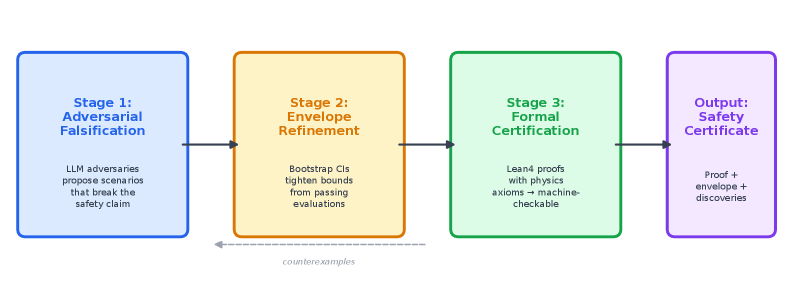
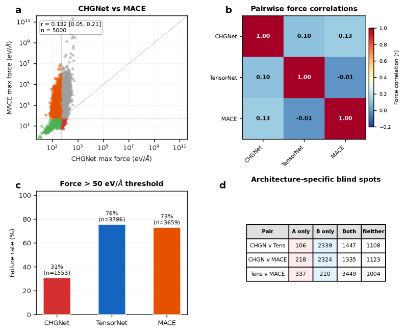

Uses Lean 4 formal certification as the final stage of safety certificates for machine-learned interatomic potentials.
Abstract
Machine-learned interatomic potentials (MLIPs) are deployed for high-throughput materials screening without formal reliability guarantees. We show that a single MLIP used as a stability filter misses 93% of density functional theory (DFT)-stable materials (recall 0.07) on a 25,000-material benchmark. Proof-Carrying Materials (PCM) closes this gap through three stages: adversarial falsification across compositional space, bootstrap envelope refinement with 95% confidence intervals, and Lean 4 formal certification. Auditing CHGNet, TensorNet and MACE reveals architecture-specific blind spots with near-zero pairwise error correlations (r <= 0.13; n = 5,000), confirmed by independent Quantum ESPRESSO validation (20/20 converged; median DFT/CHGNet force ratio 12x). A risk model trained on PCM-discovered features predicts failures on unseen materials (AUC-ROC = 0.938 +/- 0.004) and transfers across architectures (cross-MLIP AUC-ROC ~ 0.70; feature importance r = 0.877). In a thermoelectric screening case study, PCM-audited protocols discover 62 additional stable materials missed by single-MLIP screening - a 25% improvement in discovery yield.
Problem
Machine-learned interatomic potentials (MLIPs) are deployed for high-throughput materials screening without formal reliability guarantees. A single MLIP used as a stability filter misses 93% of DFT-stable materials on a 25,000-material benchmark.
Approach
Proof-Carrying Materials (PCM) closes the reliability gap through three stages: adversarial falsification across compositional space (using six strategies including LLMs), bootstrap envelope refinement with 95% confidence intervals, and Lean 4 formal certification. The safety envelope compiles into Lean 4 proofs with explicit axioms. Three architecturally distinct MLIPs (CHGNet, TensorNet, MACE) are audited on 5,000 WBM materials.

Figure 1 : The PCM pipeline. Stage 1 : automated adversaries (six strategies including LLMs) propose compositional feature vectors; the MLIP oracle evaluates each against the DFT reference. Stage 2 : counterexamples refine the safety envelope with bootstrap CIs. Stage 3 : the envelope compiles into Lean 4 proofs with explicit axioms.
Results
Auditing reveals architecture-specific blind spots: CHGNet fails on f-electron chemistries, TensorNet on heavy-element oxides, and MACE on mixed-valence transition metals. The Lean 4 certificates provide falsifiable safety guarantees, turning MLIP deployment from a trust-based to a formally auditable process.

Figure 2 : Cross-MLIP comparison of three architecturally distinct MLIPs on 5,000 WBM-derived structures. a , CHGNet vs MACE max force ( r=0.13 ). b , Pairwise force correlation heatmap: all three pairs near zero (CHGNet–TensorNet r=0.10 , CHGNet–MACE r=0.13 , TensorNet–MACE r=-0.01 ). c , Failure rates: CHGNet 31.1%, TensorNet 75.7%, MACE 73.2%. d , Architecture-specific blind spots with largely